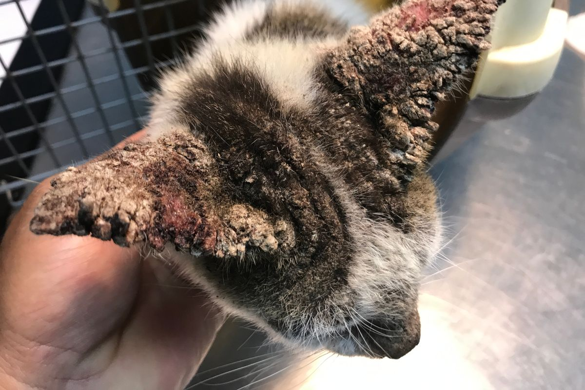

🐾 SkinCat
Deteksi penyakit kulit kucing dengan memilih ciri-ciri & gejala.
Pilih gejala yang terlihat pada kulit kucing Anda → sistem akan menganalisis kemungkinan penyakit (Flea Allergy, Ringworm, Scabies, Feline Acne).

📋 4 Penyakit Kulit Utama pada Kucing

🐜 Flea Allergic Dermatitis Alergi kutu → gatal hebat, rambut rontok pangkal ekor, kemerahan, ada kotoran kutu. 🍄 Ringworm (Kurap)
Infeksi jamur → lesi melingkar, rambut rontok berbentuk cincin, kulit bersisik.
🍄 Ringworm (Kurap)
Infeksi jamur → lesi melingkar, rambut rontok berbentuk cincin, kulit bersisik.
 🕷️ Scabies (Kudis)
Tungau → gatal ekstrem, keropeng tebal di telinga/wajah, penebalan kulit.
🕷️ Scabies (Kudis)
Tungau → gatal ekstrem, keropeng tebal di telinga/wajah, penebalan kulit.
 ⚫ Feline Acne
Komedo hitam di dagu, bengkak, pustula, kemerahan lokal.
⚫ Feline Acne
Komedo hitam di dagu, bengkak, pustula, kemerahan lokal.
📋 Cara Penggunaan (Pemilihan Ciri-Ciri)
- Amati kulit kucing Anda dengan pencahayaan cukup.
- Buka menu Deteksi Gejala dan centang semua ciri-ciri yang sesuai.
- Klik tombol "Deteksi Sekarang" → sistem akan mencocokkan dengan 4 penyakit.
- Baca hasil kemungkinan penyakit dan saran perawatan awal.
- Konsultasikan hasilnya ke dokter hewan untuk penanganan lebih lanjut.
🔬 Deteksi Penyakit Kulit Kucing
Pilih ciri-ciri & gejala yang tampak pada kulit kucing Anda (centang semua yang relevan):
📚 Informasi Lengkap 4 Penyakit Kulit Kucing
🐜 Flea Allergic Dermatitis (FAD)
Reaksi alergi terhadap air liur kutu. Gejala khas: gatal intens, kemerahan, rambut rontok di pangkal ekor & punggung, adanya kutu/kotoran kutu, kulit bersisik, luka garuk. Penanganan: kontrol kutu menyeluruh (spot-on/semprot), obat antiinflamasi dari dokter, bersihkan lingkungan.
🍄 Ringworm (Dermatofitosis)
Infeksi jamur menular ke manusia/hewan lain. Ciri utama: lesi melingkar seperti cincin, rambut rontok melingkar, kulit bersisik & berkerak, gatal ringan hingga sedang. Penanganan: antijamur topikal & oral, isolasi, disinfeksi lingkungan, jaga kebersihan.
🕷️ Scabies (Kudis)
Infestasi tungau (Notoedres cati). Gejala berat: gatal ekstrem (kucing gelisah), keropeng tebal di telinga, wajah, siku, perut, penebalan kulit, rambut rontok. Penanganan: obat antiparasit (ivermectin/selamektin), mandi obat, semua hewan kontak diobati.
⚫ Feline Acne
Gangguan folikel rambut di dagu/bibir. Tanda: komedo hitam (blackheads), pembengkakan, pustula, kemerahan, kadang gatal. Penanganan: pembersihan antiseptik (chlorhexidine), salep antibiotik jika infeksi, ganti mangkuk plastik dengan stainless/keramik.
🧴 Tips Perawatan Kulit Kucing Sehat
- ✨ Periksa kulit & bulu secara rutin (setiap 1-2 minggu).
- ✨ Gunakan produk anti-kutu & caplak sesuai rekomendasi dokter hewan.
- ✨ Sediakan mangkuk makan dari keramik/stainless untuk mencegah feline acne.
- ✨ Jaga kebersihan lingkungan: cuci alas tidur, vakum karpet.
- ✨ Beri makanan bergizi tinggi omega-3 untuk kesehatan kulit.
- ✨ Jika kucing terlalu sering menggaruk, gunakan e-collar untuk mencegah luka.
- ✨ Segera konsultasi ke dokter jika gejala memburuk atau muncul lesi luas.
ℹ️ Tentang SkinCat
SkinCat adalah platform pendeteksi dini penyakit kulit kucing berbasis pemilihan ciri-ciri/gejala. Dibangun untuk membantu pemilik kucing mengenali kemungkinan Flea Allergic Dermatitis, Ringworm, Scabies, dan Feline Acne.
⚠️ Disclaimer: Hasil deteksi bersifat prediktif & edukatif, bukan pengganti diagnosis medis profesional. Selalu bawa kucing ke dokter hewan untuk penanganan akurat.